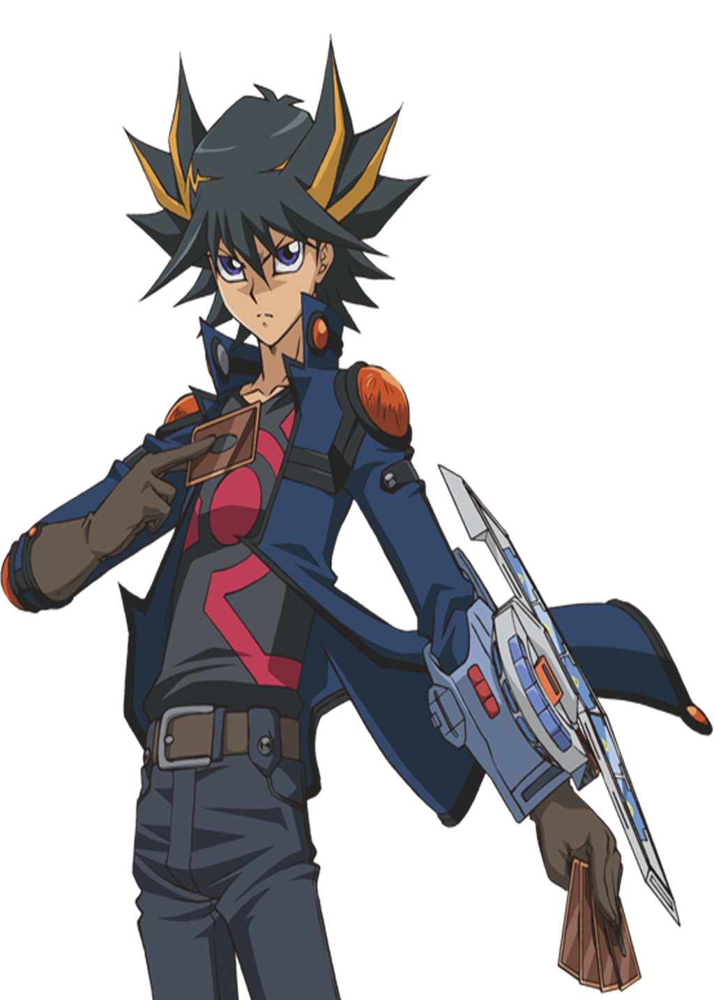

Yusei Fudo es conocido por muchos y respetado por otros por su ingenioso estilo de duelo. Su considerable
habilidad tanto como mecánico, así como duelista, y su personalidad tranquila e inteligente
lo hacen uno de los mejores.
Yusei tiene ojos azules, cabello negro y algunos mechones con reflejos dorados. La capa superior de su
cabello termina en puntas que se elevan mientras que las puntas del cabello inferior caen hacia abajo.
Yusei viste una chaqueta azul de mangas largas con cuello alto con dos gemas circulares de color ámbar,
sobre una camisa negra sin mangas con un símbolo rojo y un par de guantes. Su vestimenta inferior
está formado por unos jeans negros, con rodilleras de color ámbar, un cinturón con
dos cajas para Deck Principal que queda oculta bajo su chaqueta y botas de motorista que cubren sus
pantorrillas enteras.
Yusei Fudo nació en el área Alta de la Ciudad de Neo-Domino. Su padre fue de los
líderes desarrolladores de un reactor llamado "Ener-D". El Dr. Fudo nombró a su hijo "Yusei"
debido a una Partícula Planetaria llamada "Yuusei Ryuushi", ya que él deseó que de forma
similar al funcionamiento de este mecanismo, Yusei fuera capaz de unir a las personas a través de
vínculos. A medida que la Reversa Cero tomaba lugar, antes de morir, el padre de Yusei le puso a
salvo gracias a una cápsula de escape hacia la ciudad "vecina" de Satélite, salvándole así
del desastre que sucedería. A medida que Yusei crecía, despertó su interés por
la mecánica y eventualmente por los duelos.
Aunque es un joven tranquilo y sereno, dentro de él alberga un corazón de fuego que arde con
intensidad. Gracias a sus vínculos de amistad y su destino como "Salvador", Yusei ha evitado muchas
catástrofes para el mundo en incontables ocasiones. Los monstruos de su mazo no son de gran nivel,
pero de ellos extrae su máximo potencial mediante las invocaciones por "Sincronía".
Su monstruo favorito, y con el que siempre cuenta en la situaciones difíciles, es el "Dragón
de Polvo de Estrellas"